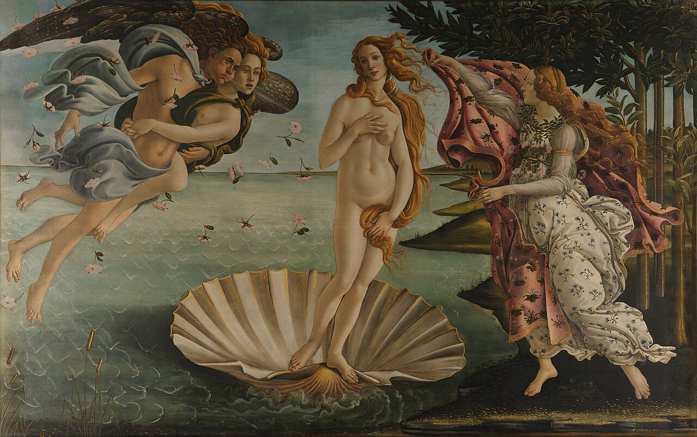

《维纳斯的诞生》的吸引力，来自一个被精心维持的瞬间：风吹动头发、花朵与衣料，维纳斯却安静地站在贝壳上。她正在抵达海岸，迎接她的人已经展开披风，但双脚尚未踏上陆地，身体也尚未被包裹。整个画面都在推动这次到来，又让它迟迟没有完成。
波提切利用清楚的轮廓、反复回旋的曲线和三组人物之间的呼应，把这个神话场景变成了可以直接感受的形象。理解它好在哪里，可以从这些具体安排开始：为什么我们的目光会停在维纳斯身上？为什么她的身体显得轻？为什么一幅有风、有飞行、有翻卷衣料的画，看起来仍然如此安静？

桑德罗·波提切利，《维纳斯的诞生》，约 1485 年，布面蛋彩，172.5 × 278.5 厘米，佛罗伦萨乌菲齐美术馆藏。作品信息以乌菲齐馆藏页为准。图片取自 Wikimedia Commons 所收录的 Google Art Project 数字复制图；放大查看画作。
画中的事情：女神正要踏上陆地
维纳斯是罗马神话中的爱与美之神，与希腊神话中的阿佛洛狄忒相对应。画面沿用她与海洋有关的诞生传统，但描绘的具体情节，是女神诞生之后抵达海岸。
左侧的男性是西风之神泽费罗斯，他鼓起双颊，将风吹向中央。与他相拥的女性常有不同解释，乌菲齐目前将她谨慎地称为可能的微风女神奥拉。右侧女子展开花饰披风迎接维纳斯，乌菲齐列出春季时序女神、美惠女神等解释。名字存在分歧，但他们在画中的动作很清楚：左边推动，右边迎接，维纳斯处在两者之间。乌菲齐：画面人物与情节
这个情节并非画家凭空拼凑。古代《荷马颂歌》第六首写到，西风将阿佛洛狄忒送过海面，时序女神迎接她，为她穿衣、佩戴饰物，再带她进入众神之中。海上到来与穿衣迎接，已经构成一个连续的叙事。《荷马颂歌》第六首，H. G. Evelyn-White 英译
波提切利把画面停在穿衣之前。右侧披风已经靠近，仍未裹住身体；贝壳已经到达浅水处，双脚仍未踏上岸。
这个停顿非常关键。若女神已经穿好衣服、站稳在陆地上，画面就更接近一次完成的迎接。现在，她仍处于海与陆、裸露与穿衣、移动与停留之间，我们因此持续感到：某件事情正在发生。
波提切利与这幅画的时代
桑德罗·波提切利约生于 1445 年，1510 年去世，原名亚历山德罗·迪·马里亚诺·菲利佩皮，主要在佛罗伦萨活动。他曾进入菲利波·利皮的画室学习，到 1470 年已拥有自己的作坊。1481 年，他受召前往罗马参与西斯廷礼拜堂的壁画装饰。创作这幅维纳斯时，他已经是有重要委托经验的成熟画家。伦敦国家美术馆：波提切利生平
他所处的佛罗伦萨，既有教堂与修会的宗教委托，也有富裕家族的私人收藏和装饰需求。古代神话、诗歌、雕塑与当时的绘画相互交织，画家需要把受教育者熟悉的文学和古典形象，重新组织成可观看的作品。波提切利的神话绘画，正生长在这样的赞助环境中；他有力的轮廓、抒情的姿态与流动衣料，也与古代艺术及赞助者的趣味有关。波士顿美术馆：波提切利与佛罗伦萨
在这个环境里，一幅神话画可以同时完成几件事：装饰居所，展示主人对古典文化的熟悉，也为关于爱、美和人的品格的讨论提供形象。人物的身体于是获得了多层意义。观者可以欣赏肌肤与姿态，也可以把女神放进诗歌、道德或哲学的理解之中。
这与画家的宗教创作并不隔绝。波提切利长期创作圣母、祭坛画与其他宗教题材，晚年的部分作品又呈现出更严肃、紧张的宗教气氛。他的艺术经历包含多种委托与表达方式，《维纳斯的诞生》展现的是其中抒情、优美而高度经营的一面。波士顿美术馆：画家不同阶段的变化
《维纳斯的诞生》很可能与美第奇家族的委托有关。不过，具体是谁订制、最初悬挂在哪里，不能全部当作定论。现存可靠线索包括：瓦萨里在 1550 年出版的记述中，提到这幅画位于美第奇家族的卡斯特洛别墅。这与创作时间相隔数十年，仍不足以还原最初的委托经过。乌菲齐：作品来源
这也影响我们怎样理解画作。它很可能面对私人住宅中的观看环境，古典题材能够承载修养、趣味和身份的表达。将它直接说成某一场婚礼的礼物，或一份有明确条款的哲学宣言，都会比现有证据走得更远。
构图的力量：中央安静，两侧不断靠近
先把花纹、面孔和神话名字放在一边，只看三个主要形状。
左侧是一组倾斜飞行的人体，中间是一具接近直立的身体，右侧则是站在岸边、向中央伸展的女子。两侧都包含明显的斜线和伸出的动作，中央的维纳斯却以较长、较缓的曲线站立。
于是，我们很快就能分清谁在推动故事，谁是故事围绕的中心。
维纳斯周围还保留着相当清楚的海面和天空。左侧的人物彼此重叠，右侧女子与树木、披风交织，只有她的身体轮廓相对完整地展开。浅色皮肤与灰蓝、灰绿背景之间的差别，使她从周围形状中显现出来。她的突出程度，来自颜色、间隔与姿态共同作用。
下方巨大的贝壳又提供了一个横向展开的底座。壳上的放射状纹路从较窄的位置向外打开，与向上延伸的人体形成配合。它既是神话中的交通工具，也像一个小小的平台，将女神从海面上托出来。
这种组织并不依靠左右完全对称。左边有两个人，姿态紧密而倾斜；右边只有一位迎接者，却加上了披风与浓密树木。左右分量不同，仍在中央形成了可以感受的均衡。
若把两边人物挪得过近，维纳斯就会被动作包围；若让他们离得太远，抵达与迎接又会失去联系。现在的距离既能让故事连起来，也让中央保有安静的空间。
风为什么看得见：头发与衣料承担了运动
风是看不见的空气运动，画家需要让其他东西显示它正在经过。
左侧风神的口部给出风的来源，空中的玫瑰让运动散布到海面上方。维纳斯的长发向侧面展开，右侧披风卷起，迎接者的裙摆也被带动。我们的目光在这些变化之间移动，便能把它们理解为同一场风中的不同反应。
尤其值得看的是长发。靠近身体的头发有较大的、连续的弯曲，离开身体之后，又分出细小的回旋。它一面沿着颈部、手臂与腿部走，一面向空气里伸展，把坚实的人体和周围空处连接起来。
披风的作用又有所不同。头发主要形成细线，披风则展开成较大的色块。它的边缘卷起、折回，既让我们感到衣料在动，也在维纳斯旁边形成一个即将包围她的形状。
这些装饰细节，因此进入了叙事的核心：没有它们，风神即使鼓着脸吹气，中央人物的到来也很难有如此连续的动势。
艺术史家阿比·瓦尔堡在十九世纪末研究这幅画时，就把随风运动的头发、衣料等细节作为重要问题。他比较古典文本、波利齐亚诺的诗歌与绘画，追问文艺复兴画家怎样从古代形象中寻找表达运动的办法。相关研究提醒我们，古代艺术带给波提切利的资源，也包括充满生命感的动作与衣褶。UCL Press：《Botticelli Past and Present》，相关研究章节
回到画上，周围运动越丰富，维纳斯躯干的平静就越显眼。风几乎替她完成了移动，她自己无需摆出用力前行的姿态。
线条怎样让身体显得轻
看维纳斯的肩部、腰侧、腿部和手臂，会发现轮廓本身十分醒目。即使暂时忽略体内的明暗，仍能沿着边缘辨认她的姿态。
这里的“线条”不只是用细线把人圈住。它还决定每一处弯曲怎样接续：颈部接向肩膀，手臂收回胸前，腰部稍稍内收，再转向胯部与膝盖。局部的动作被组织成长短不一的曲线，让目光可以顺着身体移动。
头发也在重复这种节奏。身体的曲线较大、较缓，发丝的曲线较细、较密；衣料边缘又将弯曲放大。它们并不长得一样，却共同构成了一种回旋感。
这使人体既能被辨认为有血肉的身体，又与花朵、头发、贝壳纹路处在同一套画面秩序中。人物与环境之间，不只存在故事联系，也存在形状上的联系。
画中的空间同样服务于这种观看。海面有远近，岸线也向后退去，但主要人物都清楚地展开在前景。画面没有让强烈的纵深把我们一路吸向远方，注意力可以停留在人物之间、衣料表面和连续的轮廓上。
因此，它很容易在缩小后仍保有辨识度。人物的姿态和几组主要形状清楚，即使细节暂时看不见，整体关系也没有立刻消失。
身体为什么有些不自然，却仍然动人
维纳斯的身体有明显的修长感。颈部、肩膀到手臂的衔接，躯干与双腿的关系，都呈现出经过拉长和柔化的效果。她的重心偏向一侧，脚下的贝壳又漂在水上，站姿因此带着轻微的不稳定。
如果拿现实中的站立动作逐处核对，容易觉得这种体态需要更多支撑。但在画面里，这种不完全落稳的感觉，恰好与她仍处于抵达过程中的状态相接。
修长的身体让大幅曲线有更多展开空间；下倾的肩线与轻轻偏转的头部，使她显得柔和；向内收拢的双臂又让身体保持含蓄。几种变化共同建立了一种轻、缓、仿佛尚未完全属于陆地的形象。
这里也需要一个判断标准：变形本身并不自动构成优点。若身体局部的拉长只是突兀地出现，妨碍整个姿态，就很难仅用“艺术处理”来解释它的价值。
这幅画较有说服力的地方，在于这种修长并不孤立。身体、发丝、衣料、花茎和贝壳纹路，都在反复组织舒展与弯曲。人体的变化参与了整幅画的节奏，我们因而更容易将它体验为一个完整形象。
评价这类处理，可以同时看两个方面：人体有没有可以理解的结构，形体的变化又给整幅画带来了什么。修长的比例减少了一些现实身体的重量感，也让回旋的线条与悬而未落的姿态更突出。两种效果都能在画中找到依据，判断因此有了具体的对象。
色彩与材料：明亮的身体如何从海面上出现
画中的颜色并不平均用力。
海面偏灰绿，天空偏灰蓝，右侧树木形成较深的区域；维纳斯的皮肤则是相对明亮的暖色。她的身体面积完整，又处在较安静的背景前，因此很容易成为视线停留的位置。
粉红披风与金黄头发在两侧增加温度。披风的粉色面积较大，头发则借较细的线与亮部不断变化。它们围绕中央人体展开，使画面保有色彩的丰富性，同时维持主次。
深色树林也很重要。它让右侧有了较重的分量，衬出女子的浅色衣裙与披风。如果整幅背景都保持同样浅淡，中央人物和右侧迎接者之间的区分，就不会如此清楚。
这幅作品使用布面蛋彩。颜料需要与能将颗粒黏合的媒介混合，蛋彩通常使用蛋黄作为媒介；它是早期意大利绘画的重要材料。伦敦国家美术馆：Tempera
它的实际宽度接近 2.8 米，高度超过 1.7 米。这样的尺度会改变观看：画中身体和衣料在墙面上占据真实的空间，细长的轮廓也能展开成较大的运动。手机上的小图容易将它变成一个熟悉的图案；放大之后，手指、发丝和布边怎样参与整体，才会逐渐清楚。
从复制图上可以看到，皮肤仍有柔和的明暗，轮廓却始终保持清楚。我们既能感到身体的起伏，也能持续辨认形体边缘，而不会完全沉入厚重、强烈的光影中。
头发的金色亮部还有材料层面的依据：乌菲齐说明，画家在其中使用了金。放在画面中，这些亮部增加了发丝的细节，也让人容易将它与神话人物的光辉联系起来。乌菲齐：头发中的金色处理
屏幕上的色彩会受数字复制与显示设备影响，但主要的关系仍然清楚：较冷的背景、较暖的身体、深色树木，以及反复出现的金色与粉色。
海浪、玫瑰与树林：自然也被整理成节奏
人物之外，海与植物也经过了鲜明的组织。
海浪由一组组短弧线和折线铺开。近处的浪更大，贝壳下方也有翻起的水，但大片海面仍保留了相对平缓的感觉。它给出了水的特征，同时为人物留出一个不至于过分喧闹的背景。
空中的玫瑰也很特别。花朵朝向不同，有的显出花瓣，有的带着叶片与细茎，彼此之间又留着间隔。我们可以把它们读作风中飘落的花，同时又像看见一组散布在画面上的纹样。花朵因此连接了自然场景与表面的装饰。
右侧树干向上重复，浓密树叶将画面边缘收住。它与左侧开阔的空气形成差别：一边有足够的空间容纳飞行，另一边已经出现陆地、植物与迎接。海岸的转折，就藏在这两种环境的交接之中。
这种将自然形态整理成反复的线与图案的方式，可以称为装饰性的处理。它让风景与人体共享某种秩序：海浪有反复的弯曲，发丝有反复的回旋，披风和衣裙上又有反复的植物形状。
于是，背景既交代地点，也参与整幅画的节奏。假如海面充满巨大浪峰、天空翻涌着浓重云层，风神的力量也许更容易被理解，维纳斯却会面对一个更强势的环境。眼前这种平缓而有规律的自然，让她能够以轻而安静的方式到来。
裸露与遮掩：为什么她显得安静而有距离
维纳斯几乎正面展开，站在画面中央，身体清楚地处于观看之中。与此同时，她用手与长发遮掩身体的部分区域，头部轻轻侧倾，表情又相当克制。
这种安排与古代“遮掩式维纳斯”的形象类型有关：女神通过手臂、身体转折或其他遮挡，形成既展示又遮掩的姿态。波提切利借用了古典雕像的资源，并让长发参与其中。乌菲齐提供的扩展介绍：古典姿态
长发因此同时承担几种功能：显示风、延伸轮廓，也遮掩身体。一个细节被放进多重关系中，画面便不需要不断添加新的道具。
遮掩的动作也让观看变得复杂。它盖住部分身体，同时又把目光带到手与头发所在的位置。画面由此维持着显露与保留之间的牵引。
她的面孔进一步改变了这种牵引。嘴唇没有夸张地张开，眼神也没有强烈地锁住观看者。即使我们站在她面前，她似乎仍保留着自己的沉静。有人会从中读出温柔，也有人感到淡淡的忧郁；这种感受来自具体的面部和姿态安排，不必给她补写一段确定的内心独白。
这也使我们能够同时看到两件事：她是一位被作为理想美来观看的女性形象，也是一位在画面中保有距离、没有完全回应观看的神话人物。
她与古代雕塑的关系，也在这里发生变化。面对一尊可以绕着观看的雕像，观者的位置会改变身体不同部分的显露；这幅画则确定了一个主要观看方向，并把身体放进风、海岸、花雨和迎接者之间。
女神的姿态因而获得了具体的时间：她刚刚到来，即将穿衣。古代的身体类型被放进一个新的场景，原有的姿态有了新的前后关系。波提切利对古典形象的使用，包含选择、改动和重新编排，这也是文艺复兴绘画能够从古代资源中长出自身面貌的方式。
神话与哲学，能够解释到哪一步
十五世纪佛罗伦萨对古典文化的兴趣，涉及语言、诗歌、哲学和形象的重新使用。当时的诗人波利齐亚诺，在《比武诗节》（Stanze per la giostra）中描写过乘贝壳而来、受到迎接的维纳斯。文学中的场景与这幅画之间存在密切联系，瓦尔堡的研究也比较了诗歌中的衣料、头发与画中形象。UCL Press：诗歌与绘画的联系
另一个常见的解释方向，是新柏拉图主义。它在当时的佛罗伦萨通过费奇诺等人的翻译和论述得到发展。对这一思想中的美与爱，可以先抓住一个基本意思：对可见事物的爱，能够引导人超越个别对象，转向更普遍的美，并最终联系到神圣的秩序。《互联网哲学百科全书》：费奇诺的美与爱
放在这个背景中，维纳斯可以同时指向身体的吸引力和理想之美。她有具体的皮肤、头发与姿态，却又被安排在现实生活中无法遇见的场景里。画中的美既可以通过感官接近，又超出了一个日常人物的身份。
这也能帮助我们理解，古代女神为何可以出现在仍有强烈基督教信仰的文化中。费奇诺等人的工作，本就包含将古典哲学与基督教思想相联系的努力。身体的美、爱的经验与精神追求，可以被放进同一套讨论之中。画中的神话于是拥有了超出故事本身的思考空间。《互联网哲学百科全书》：费奇诺的古典思想与基督教背景
这一读法具有解释力，但不能替代全部观看。哲学背景提供了一种理解方向，具体委托经过与寓意仍需要其他证据支持。
如果只把维纳斯记成某个理念的代号，画就会变成等待解码的图表。头发怎样飘、披风怎样卷、身体怎样保持安静，仍然决定了这些观念能否成为有吸引力的形象。
哲学背景能帮助解释，当时的人为何愿意郑重地观看一位古代女神；画面的具体组织，则解释我们今天为何仍愿意停下来。
它的经典地位，也有一段形成过程
波提切利在生前已有名望，但后来受到的重视发生过变化。十九世纪，他的作品逐渐被重新发现，拉斐尔前派等艺术家又从中获得启发。维多利亚与阿尔伯特博物馆的“Botticelli Reimagined”展览，专门梳理了这种从重新发现到现代改写的过程。V&A：波提切利的重新发现与影响
因此，今天看见的“永恒经典”，也包含后世不断选择、复制和解释的结果。
这幅画特别适合被记住：中央人体、贝壳、长发和两侧的迎接关系，组成一组清楚的形状。即使某次改编只保留其中几项，人们仍可能辨认出原作。V&A 策展人马克·埃文斯就以《诺博士》（1962）中海边女性出场的场面为例，讨论这种影响；他还指出，电影所依据的小说，已经明确联想到波提切利的维纳斯。V&A：维纳斯与大众文化
传播常会抽取其中最容易辨认的部分，例如贝壳上的女神。回到完整画面，能够进一步看到她的安静如何依赖两侧人物，身体的轻盈如何依赖头发，清楚的轮廓又如何依赖较平缓的空间。
它究竟好在哪里
它的精确，体现在同一个细节能够同时发挥多种作用。头发参与风、遮掩、轮廓和色彩；贝壳交代神话，又承担底座与展开的形状；披风等待为女神穿衣，也让下一刻始终悬在画中。
可以在脑中做一次删减：让头发完全贴住身体，风的痕迹与身体旁的细线就会减弱；把披风换成一块已经安静垂下的布，穿衣即将发生的感觉也会改变；拿掉两侧人物，留下的维纳斯仍容易辨认，却失去了抵达与迎接的完整关系。
这说明它的整体并非随意拼接。那些看起来优美的细节，确实在维持画面的主要体验。每一处形状都与其他部分相接，几种不同的观看感受又被控制在同一个瞬间里。
我们也完全可以对它保持保留：觉得身体不够有重量，空间过于平缓，理想化形象与现实经验有距离。这些意见触及了它的具体选择。欣赏经典，并不要求放弃自己的感受；更有意义的是看清楚，画家通过这些选择获得了什么，又放下了什么。
再次看向完整画面，可以从贝壳向上看双脚、膝盖、腰部与面孔，再沿着长发转向披风，最后回到左侧风神。目光走过一圈，女神仍没有踏上陆地。那个即将完成的动作，让一幅静止的画始终保有到来的感觉。
资料与观看范围
本文依据乌菲齐美术馆的现行作品资料、伦敦国家美术馆与波士顿美术馆的艺术家介绍、V&A 的展览研究、UCL Press 相关学术章节，以及古代文本译文撰写。画面分析基于完整高清数字复制图与局部放大，未作原作现场观察；视觉效果与评价属于本文分析。创作年代采用乌菲齐的“约 1485 年”；具体委托经过、部分人物身份与哲学寓意按研究状态保留区分。
留言
由 Disqus 提供。